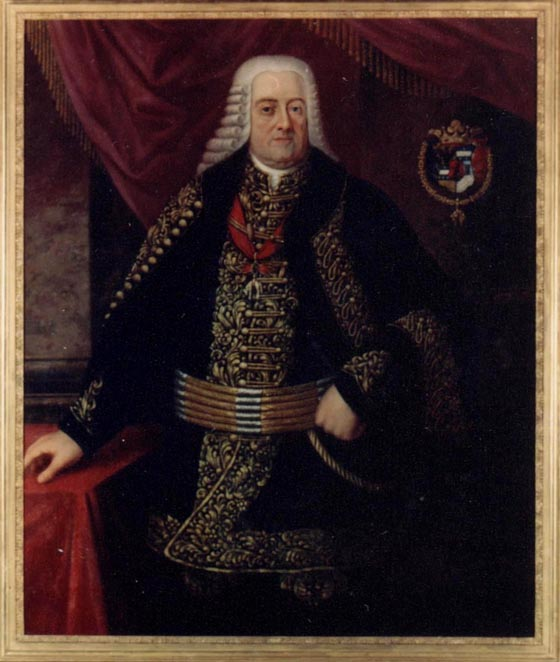

Stručná história obce
Návrh na založenie dediny predložil Juraj Erdödy ml. na porade panstva. Právne začala dedina existovať 23. Júla 1731, kedy na generálnej župnej kongregácii vo Veličnej vydali zakladaciu listinu dediny. Za právneho zakladateľa obce sa považuje gróf Juraj Erdödy ml., ale skutočným zakladateľom, ktorý začal zakladať novú obec bol Ján Mutnianský a je považovaný za prvého richtára.
Dostala názov ”Erdöd” na počesť svojho zakladateľa. Obyvatelia si ale tento názov prispôsobili a nazývali dedinu Erdútka. Toto pomenovanie obce trvalo až do konca roku 1945.
Dňom 1. Januára 1946 sa obec premenovala na Oravskú Lesnú. Celková rozloha Oravskej Lesnej je asi 65 km2. Podľa veľkosti sa zaraďuje medzi najväčšie obce v bývalom dolnokubínskom okrese.
Dedinu tvoria kopanice, vzdialené od Ústredia – stredu obce, až na niekoľko hodín chôdze. Oravská Lesná je zložená z viacerých osád, ktoré sú rozložené jednak okolo hlavnej cesty a jednak po okolitých kopcoch.

Gróf Erdody